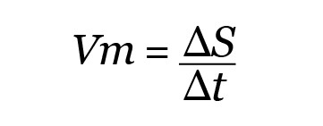
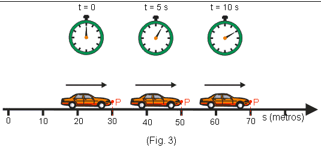

CIÊNCIA DA FÍSICA
Como se calcula a velocidade? Quais são os tipos de movimento? Como se calcula o intervalo
de tempo?
Com a física descobrimos isso, e o Colégio Presbiteriano Chamberlain possui estudos sobre
essa matéria tão interessante. A professora Thandara é a responsável pelo ensino de Física
e das áreas exatas. Para você entender um pouco mais sobre essa matéria, hoje falaremos um
pouco sobre como é possível descobrir a velocidade
de um corpo em movimento:

Vm= velocidade média
S = variação do espaço
T = intervalo de tempo
Para calcular a velocidade média, é preciso dividi-la pelo intervalo de tempo em que o
movimento aconteceu. Esse intervalo de tempo é a diferença entre o instante inicial e
o instante final.
Trata-se de um dos conceitos de cinemática, o ramo de estudo mecânico que analisa os
movimentos dos corpos. Por isso, para entender a velocidade média, é preciso entender
alguns conceitos ligados à cinemática.
O estudo da velocidade pode ser dividido em velocidade média e velocidade instantânea.
A velocidade instantânea identifica a velocidade de um corpo em um momento específico,
enquanto a velocidade média é o resultado da razão entre o espaço percorrido e o tempo gasto.
A unidade de medida da velocidade adotada pelo Sistema Internacional de Unidades é dada
em metros por segundo (m/s). Mas, para escalas maiores, utiliza-se também quilômetros por
hora (km/h). Nesse caso, importante destacar que é necessário converter m/s em km/h. Na
conversão de m/s para km/h é preciso multiplicar o valor por 3,6, já para transformar de
km/h em m/s divide-se o valor por 3,6.

Exemplo Prático:
Um ônibus parte às 15h de São Paulo com destino ao Rio de Janeiro e previsão de chegada
às 21h. Calcule a velocidade média (m/s) dessa viagem que possui a distância de 450 km?
Sf= Velocidade Final
Si= Velocidade Inicial
Tf= Tempo Final
Ti= Tempo Inicial
Sf= 450 km
Si= 0 km
Tf= 21h
Ti=15h